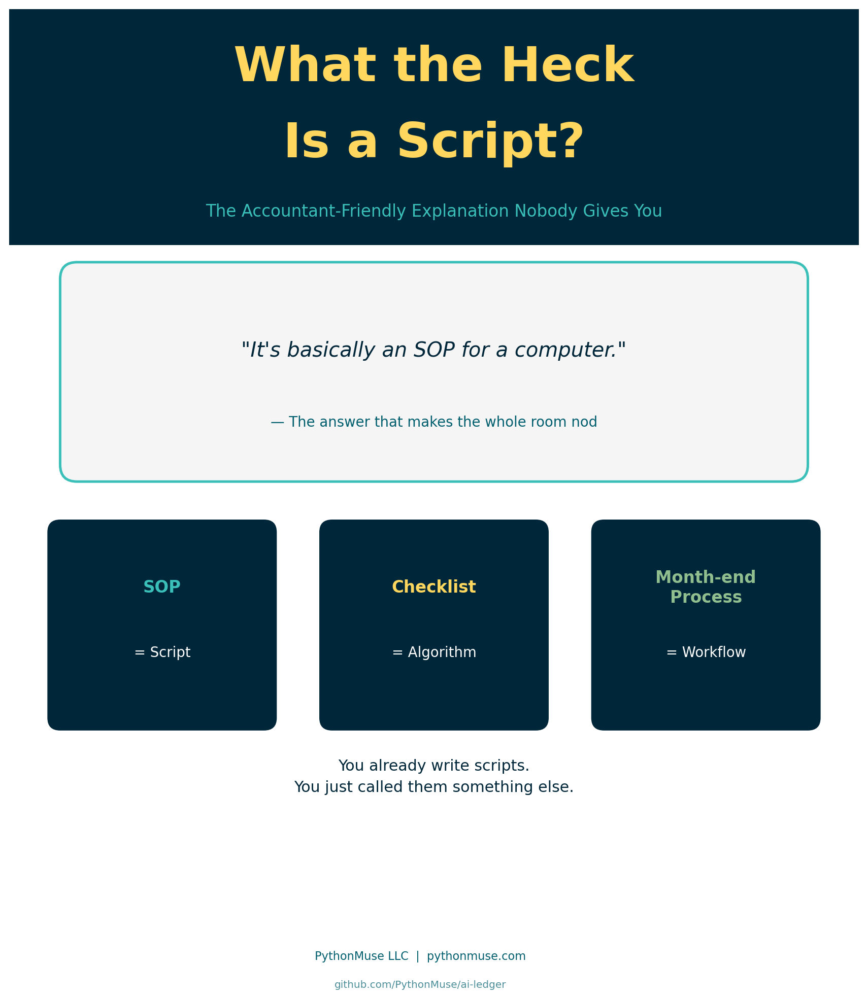
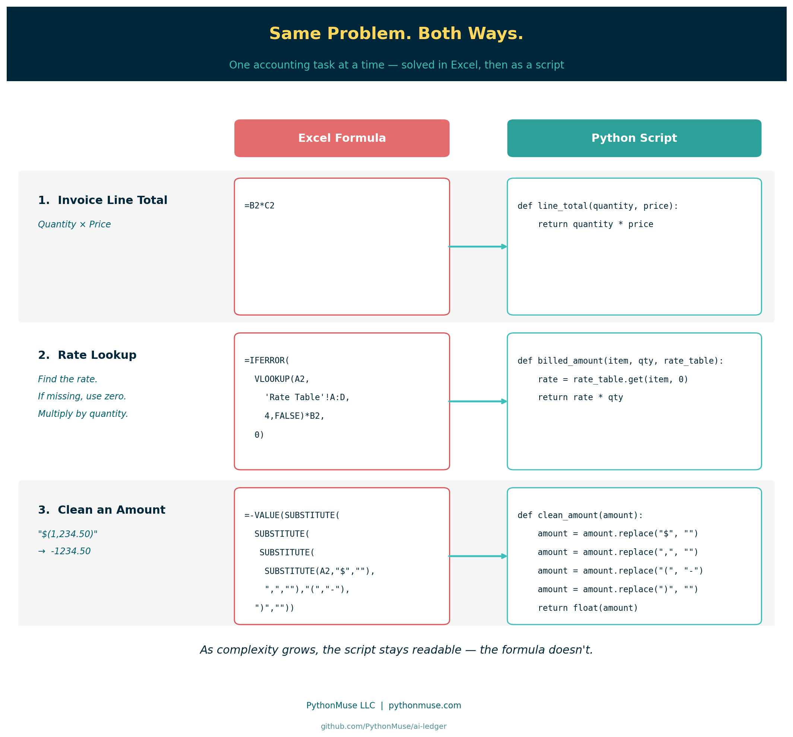
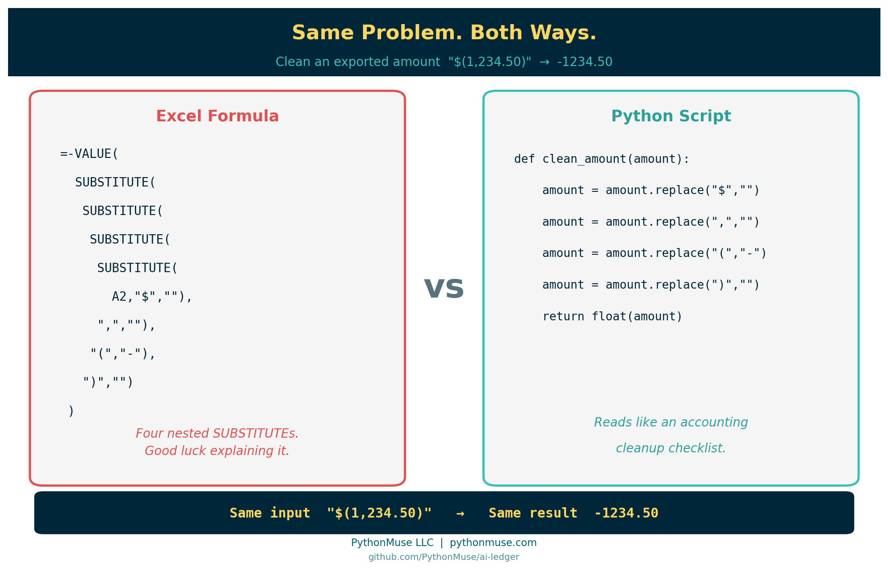

What the Heck Is a Script?
~6 min read
PythonMuse LLC Published May 2026

A Fair Question
I was doing a presentation recently and kept saying:
"Then you prompt AI to write a repeatable script."
I said it multiple times like it was the most normal sentence in the world.
Everyone nodded politely.
A few people even took notes.
Then finally someone stopped me and asked:
"Okay… but what the heck is a script?"
Fair question.
Because the minute accountants hear the word "script," half the room thinks:
- Hollywood actors need scripts - why do I need them?
and the other half of the room imagines:
- hackers in green hoodies
- green text on black screens
- a 22-year-old software engineer drinking energy drinks at 2 a.m.
Meanwhile, most scripts are just:
"The same accounting steps you already do every month — written down so the computer can repeat them."
That is it.
You already know what a script is.
You just never called it that before.
Accountants Already Use Scripts
We simply use different words.
| Accounting World | Programming World |
|---|---|
| SOP | Script |
| Checklist | Algorithm |
| Macro | Automation |
| Excel formula | Instruction |
| Month-end close process | Workflow |
If every month you:
- Export a file
- Remove blank rows
- Fix dates
- Convert negatives
- Copy formulas
- Build pivots
- Save final version as
FINAL_v2_USE_THIS_ONE_REALLY.xlsx
Congratulations.
You already created a script.
You just performed it manually.
A Note on Excel First
Before we get into the comparisons — this is not an anti-Excel argument.
Excel is exceptional at what it is designed for: presenting, reviewing, and distributing final output. Pivot tables, dashboards, management reports, ad-hoc analysis — Excel is the right tool for most.
The comparisons below are specifically about the work that happens before the final output:
- cleaning a messy export so it can be used
- applying transformation logic row by row across thousands of lines
- repeating the exact same steps every month without variation
That middle layer — data preparation, transformation, cleanup — is where formulas get nested 4 levels deep and logic starts hiding in cells. That is the layer where scripts tend to be more readable and auditable.
Once the work is done? Put it in Excel if this is your comfort level at this point. Show it to your CFO. Build the pivot.
Scripts feed Excel; they do not replace it. You get to the same result quicker and cleaner as well as removing potentially errors that can occur during performing manual work.
Same Problem, Both Ways
The fastest way to see what a script actually is — is to take an accounting task you already solve in Excel and solve it again as a script.
Same input. Same output. Two very different reading experiences.
Let's walk up the ladder from simple to messy.

Example 1 — Invoice Line Total
The accounting task: Multiply quantity by price to get a line total.
Excel:
Python:
How you audit it:
- In Excel: "What's in B2 again? And C2? Let me click around."
- In Python: the variables are literally named
quantityandprice.
Same math. One explains itself.
Example 2 — Rate Lookup With a Fallback
The accounting task: Look up a billing rate by item code. If the item is missing, treat the rate as zero. Then multiply by quantity.
Excel:
Now your audit begins. You click the formula. Jump to another tab. Then another.
You are tracing cell references across 14 worksheets trying to figure out:
- what A2 means
- where the rate table lives
- why column 4 matters
- why it multiplies by B2
- who created this masterpiece in 2019 and why they are no longer answering emails
At some point you stop auditing and start archaeological research.
Python:
Read the following slowly:
def billed_amount(item_code, quantity, rate_table):
# if cannot find item code, return zero
rate = rate_table.get(item_code, 0)
return rate * quantity
With the comment in green font that is identified with pound sing "#", you should be able to read it like a sentence:
Look up the rate for this item. If it isn't in the table, use zero. Multiply by quantity.
No tab jumping. No column 4. The fallback isn't hidden in an IFERROR — it's the word 0 sitting right next to the lookup. Now compare to how long did it take you to decipher excel formula.
Example 3 — Clean an Exported Amount
This is where the gap gets really obvious.
The accounting task: Your ERP exports amounts like "$(1,234.50)" and you need real numbers like -1234.50 so you can sum them.
Excel:
Stare at that for a second.
Four nested SUBSTITUTE calls, a VALUE, a leading minus sign, and you still aren't 100% sure it handles every edge case. Try explaining it to your reviewer without drawing on a whiteboard.
Python:
def clean_amount(amount):
amount = amount.replace("$", "")
amount = amount.replace(",", "")
amount = amount.replace("(", "-")
amount = amount.replace(")", "")
return float(amount)
Read it like an accounting checklist:
- Remove the dollar sign
- Remove the comma
- Convert opening parenthesis to a negative sign
- Remove the closing parenthesis
- Return the result as a number
That is not scary. That is a cleanup checklist written for the computer.
And unlike Excel, the logic is not buried in cell G23941. It is visible, named, and repeatable.

Scripts and Excel Work Together
The comparisons above are not meant to say Excel is bad.
Excel is excellent at the end of the process — presenting results, building reports, letting stakeholders interact with final numbers.
Scripts are better suited for the middle of the process — the cleanup, the transformation, the repetitive row-by-row logic that runs every month before anyone opens a dashboard; the deterministic steps.
When logic gets nested four levels deep inside a formula, it starts hiding. It becomes harder to review, harder to explain, harder to hand off.
A script does not hide logic in a cell. It puts the logic on the page, named and readable, from top to bottom.
That is what makes the difference for auditability. Not the language. The visibility.
Scripts feed Excel. Excel communicates the results. Both have a job.
The Biggest Misunderstanding About AI
When you hear: "AI writes scripts" — what do you imagine? It is not a giant software system.
But most accounting scripts are tiny.
Sometimes:
- 20 lines
- 50 lines
- maybe 100
Many simply automate the annoying parts of accounting work:
- cleaning exports
- standardizing dates
- converting negatives
- matching transactions
- formatting reports
The script handles the repetitive steps.
You still handle the accounting judgment.
The Important Part
A script does not replace accountants.
It replaces repetitive clicking.
You still need to:
- validate outputs
- understand the logic
- review exceptions
- explain the numbers
- ensure controls exist
AI can help write the first draft of the script.
But accountants still own the process.
And honestly? That is exactly how it should be.
The Simplest Explanation
So if someone asks:
"What the heck is a script?"
You can answer:
"It is basically an SOP for a computer."
And suddenly the entire room understands.
Related Articles
If scripts are new territory, these articles build the foundation:
- From One-Time Analysis to Repeatable Workflows — the nine-step pattern for turning a one-off task into a script
- Reproducible Accounting — why readable, repeatable logic matters for audit evidence
- AI Can't Work With Our Excel Files... or Can It? — how to add an instruction layer when your data lives in Excel
- When to Trust AI to Run Your Accounting Workflows — controls and governance once your scripts are in production
PythonMuse Skill
This article has a companion Skill you can use to review and document any Python script written for your accounting workflow:
Also available in the PythonMuse Workflow Kit on GitHub.
Published by PythonMuse LLC | GitHub